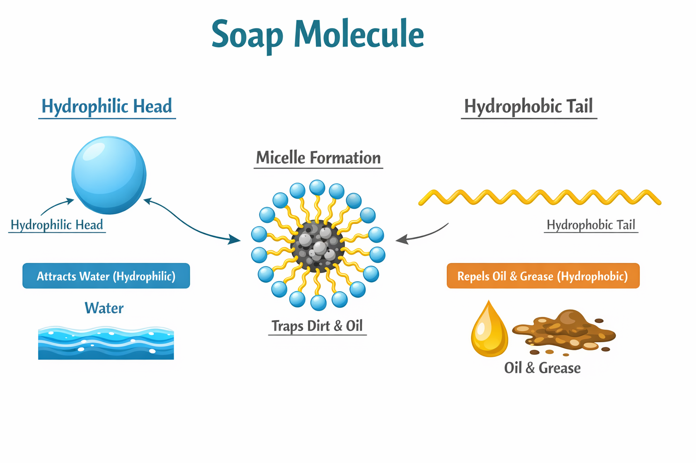
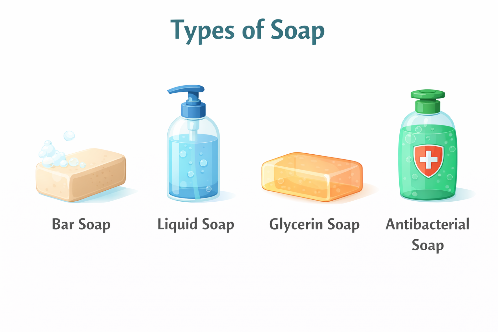
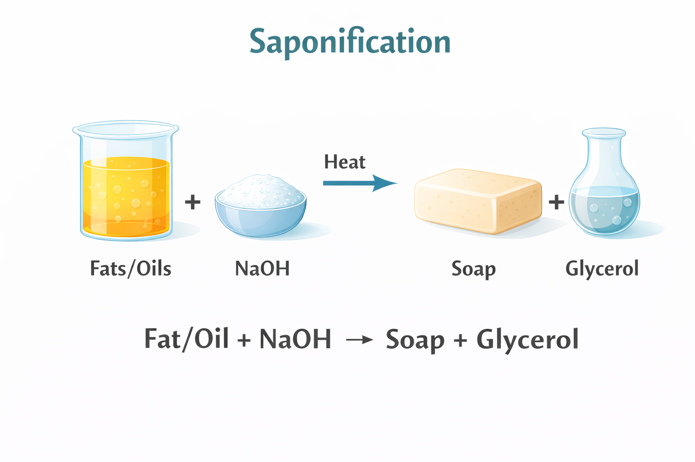
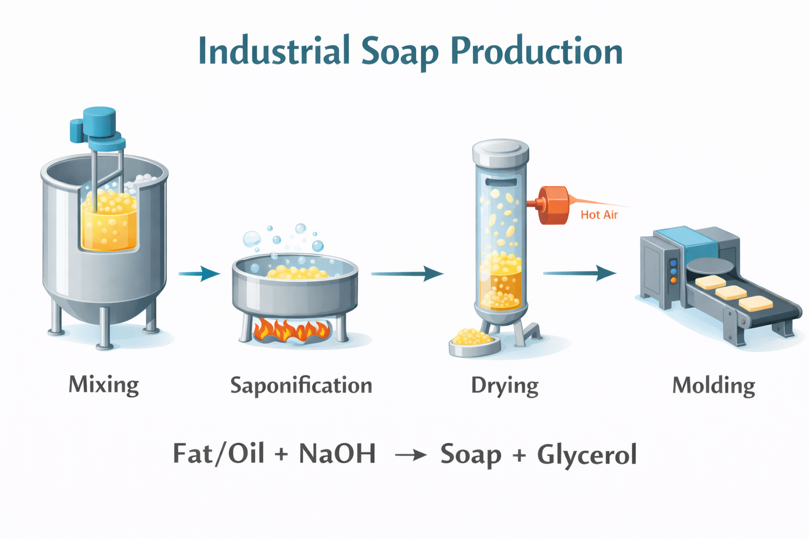

Soap is one of the oldest and most essential cleaning products in human history. This page explains the chemistry, types, production methods, and scientific principles behind soap.
Soap is a chemical compound used for cleaning and personal hygiene. Its molecules have a hydrophilic (water-loving) head and a hydrophobic (water-repelling) tail. This allows soap to remove grease and dirt effectively.
The hydrophobic tails attach to oils, while hydrophilic heads remain in water, forming micelles that trap dirt. Soap has been used since ancient Babylon, Egypt, and Rome. Modern soaps may include fragrances, moisturizers, and antibacterial agents.
There are many types of soap depending on purpose and formulation:
Soap is made via the saponification reaction: triglycerides react with a strong alkali to produce soap and glycerol.
Heat and controlled conditions are required. Different fats produce soaps with varying properties: coconut oil → rich lather, palm oil → hard bar. Glycerol may be left in soap or separated for other uses.
Soap production demonstrates applied chemistry and mathematical modeling. Reaction kinetics help predict time, reactant amounts, and quality.
Students can learn micelle formation, emulsification, and reaction optimization. Soap making combines practical chemistry with scientific principles, making it both educational and essential.